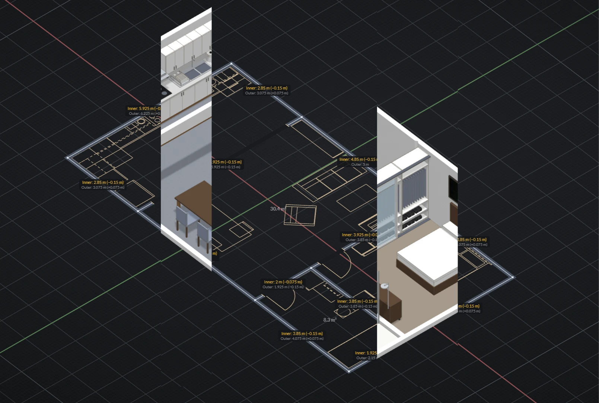
Live in the browserFloorplanner
A sketch-first 3D floor plan editor that runs in the browser. Draw the walls, fit out the rooms, walk around in 3D.
I'm a designer and an illustrator based in Sydney. I've worked as a Product Designer for 12 years. Acquiring extensive experience in creating multi-platform software.
Two products and the features behind them, from early research to release.
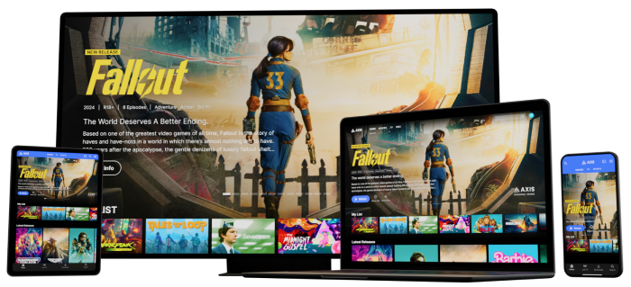
A user experience management platform designed to empower and manage sport and entertainment services.
Read case studyUpdating existing functionality to solve client pain points.
Read case study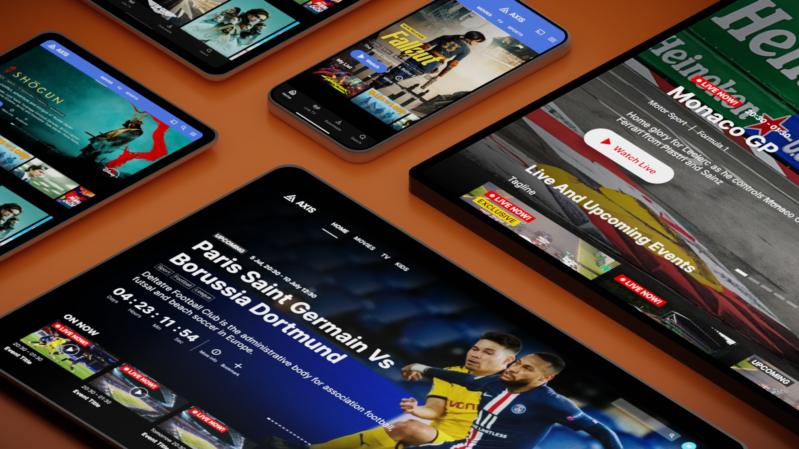
Creating a hero carousel component for a multi-platform service.
Read case study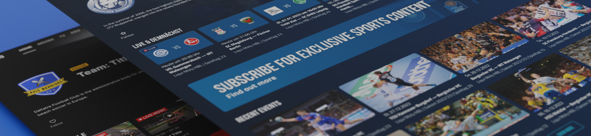
Creating and maintaining a design system for an existing white label product.
Read case studyThings I design and build for myself, to scratch an itch or learn something new. Some of them you can try right here.

Live in the browserA sketch-first 3D floor plan editor that runs in the browser. Draw the walls, fit out the rooms, walk around in 3D.
12 years in the industry, countless features and projects, and 4 products seen through their whole lifecycle. Here’s what that’s taught me about doing the work well.
The process at Deltatre is based on the Double Diamond. We’ve slowly shaped the process to fit our product team’s workflow.
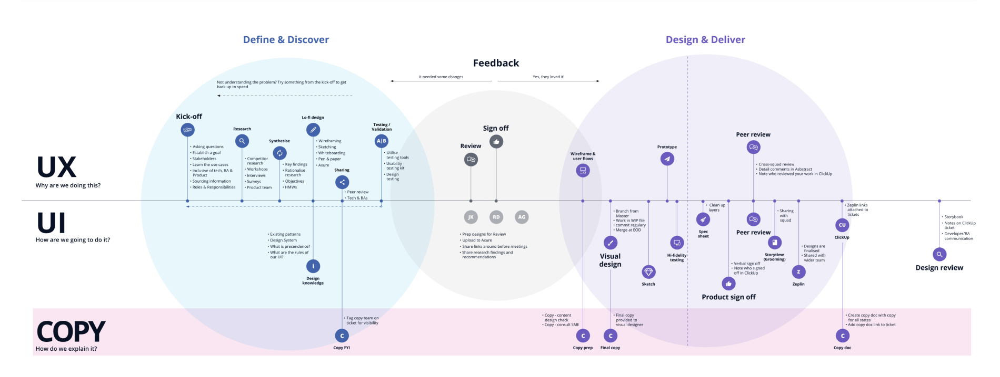
I've always embraced collaboration with all disciplines involved in creating our products. Early involvement of key parties from each discipline allows for discussing any technical insights and feasibility concerns.
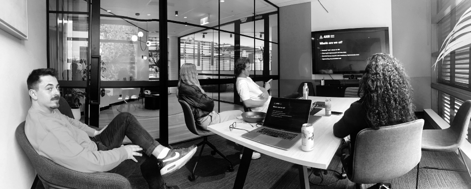
I've created consistent experiences across different devices and operating systems. I've designed for devices such as TVs, set-top boxes, consoles, tablet, mobile and computer browsers. Leveraging their native components and utilising guidelines for a more efficient development.
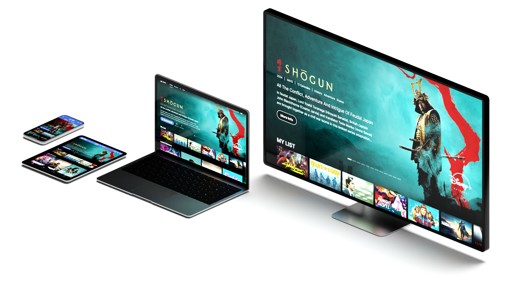
I’ve worked on design systems that accompany simple products aimed at single device targets, as well as massive multi-platform apps. Utilising atomic design methodology that breaks down interfaces into smaller components and allows more granular control, as well as the ability to apply global changes rapidly.
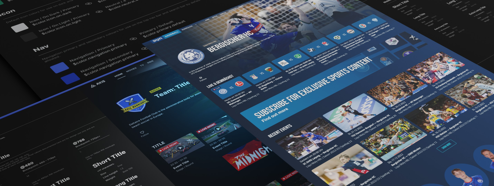
I’ve included accessibility as one of the key steps of the design process for features I've worked on. Over the years I've utilised WCAG and platform specific guidelines, as well as an array of tools such as contrast checks and colour blindness filters to create inclusive designs.
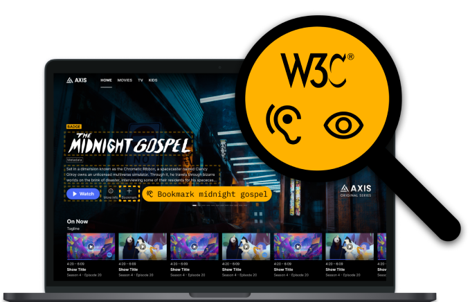
I use prototyping to validate most of my design decisions, investigating concerns and identifying areas for improvement. When possible, I've facilitated usability testing utilising prototypes, created based on a script that guides the user through a series of tasks. I discuss usability testing further in the Recurring Schedule case study.
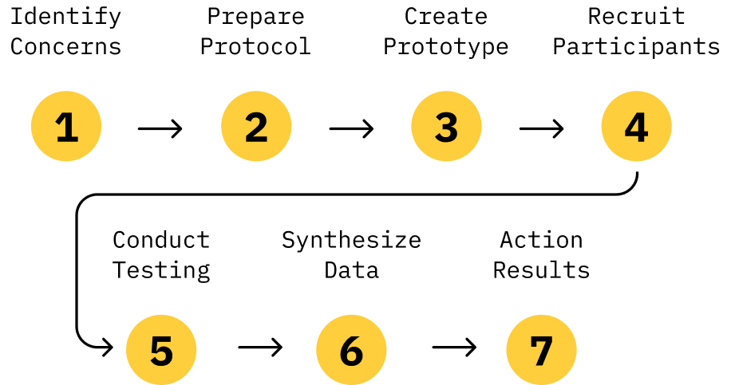
I'm originally from Poland and have lived in Australia for the last 18 years. I've always had a passion for art and design since a young age, eventually I went down the path of studying graphic design before landing a hybrid UX / UI role at Massive Interactive, later merged with Deltatre.
I acquired invaluable experience over 9 years at the company, starting my role in a service design team. Creating solutions for features in a client facing environment. As time went on, I was given the opportunity to join the product team; where I'd spend the rest of my journey working across various products.
Beyond my extensive work with user experience design, I've also been able to apply my visual design background and create various illustrations, graphics and help centre content to enrich our products.
I've had the opportunity to take on and adapt to a range of new tasks, always keen on taking on new challenges.
A white label product for video merchandising. Offering the ability to package, present and monetise their video assets in real-time across any device.
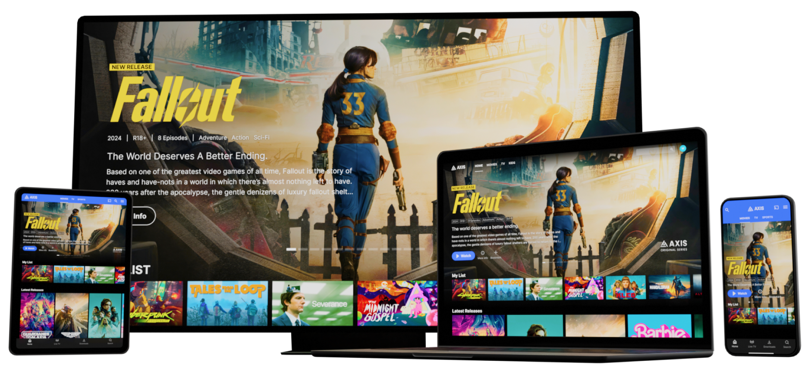
I had the opportunity to partake in the early research and ideation process of creating the new iteration of AXIS, as it is seen today. I was involved in early workshops, discussions, direction making, as well as designing a large number of key features and templates that would lay the foundation of the product moving forward.
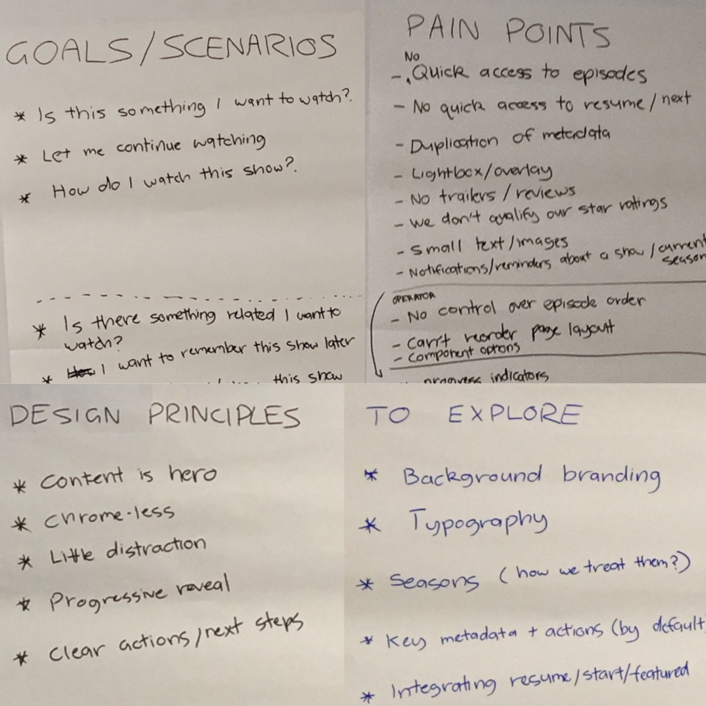
Throughout the product's development I've had the opportunity to create features from end to end. Clarifying requirements early to ensure we're designing the right solution. Keeping in touch with developers to design a feasible solution, as well as providing design documentation and kick-off sessions. Finalising the feature by testing it along with quality assurance teams.
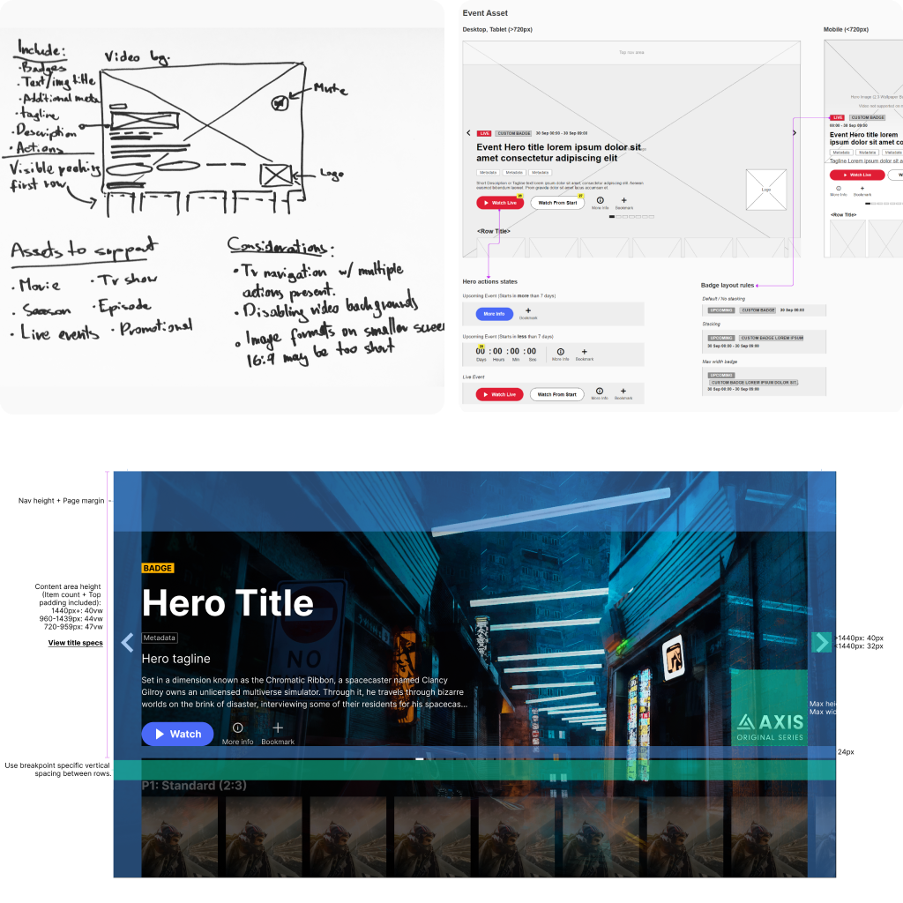
As the development of AXIS continued, I was responsible for producing a consistent experience across several platforms. Starting with responsive web, covering a wide range of screen sizes and types allowed us to solve a large number of templates and features; before translating them to other platforms such as mobile, tablet, TV, XBOX and a range of set-top boxes.
As the scope of development grew over the years, internal teams from around the world took different sections of the app development. Despite this, a large portion of the design team remained in Sydney. I've had the chance to facilitate a range of kick-off and check-in sessions for a number of features in collaboration with international teams.
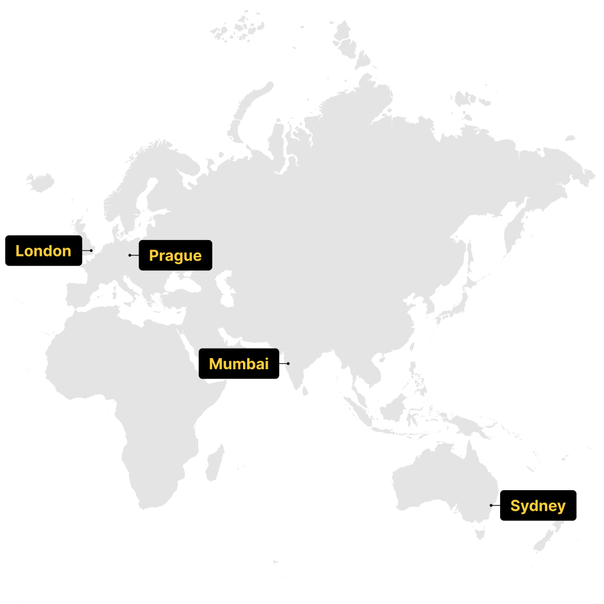
Existing offering of Hero Carousels lacked a level of control expected by our clients. Our new hero carousel would aim to provide users with greater control over their presentation, utilising robust actions, metadata and assets. This case study looks deeper into the work that brings a consistent experience across different device types and operating systems, while addressing common client requests.
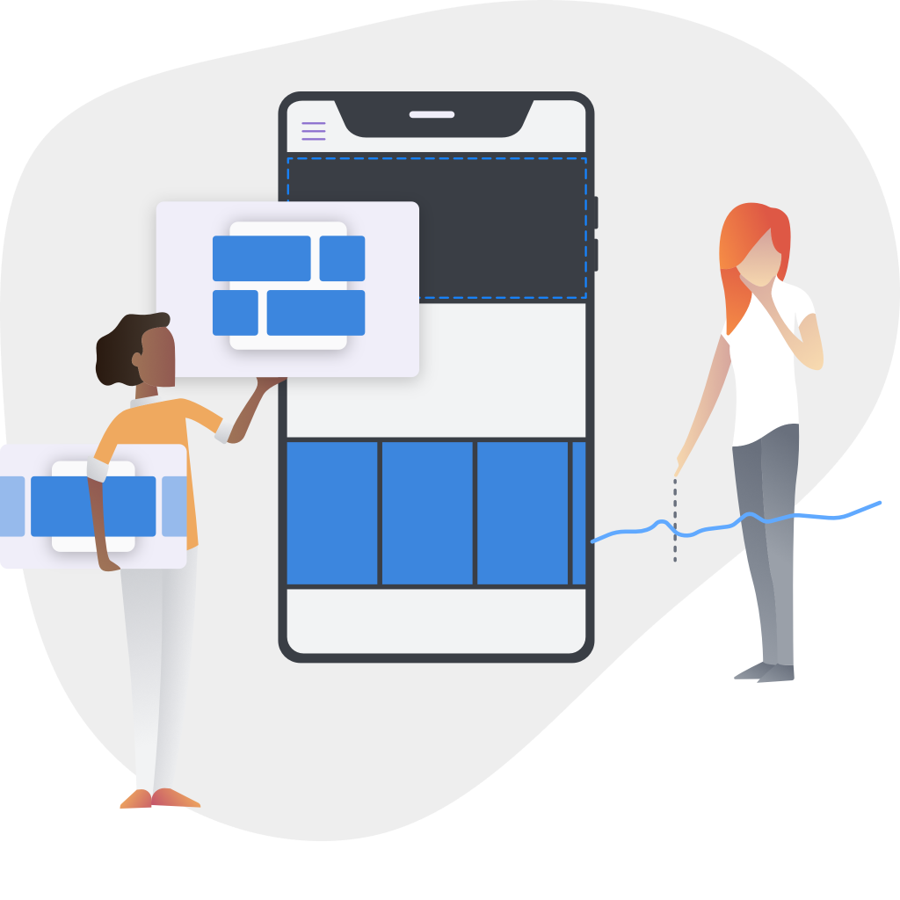
Operators are our clients utilising AXIS, setting up, editing and publishing their content.
As an operator I want to:
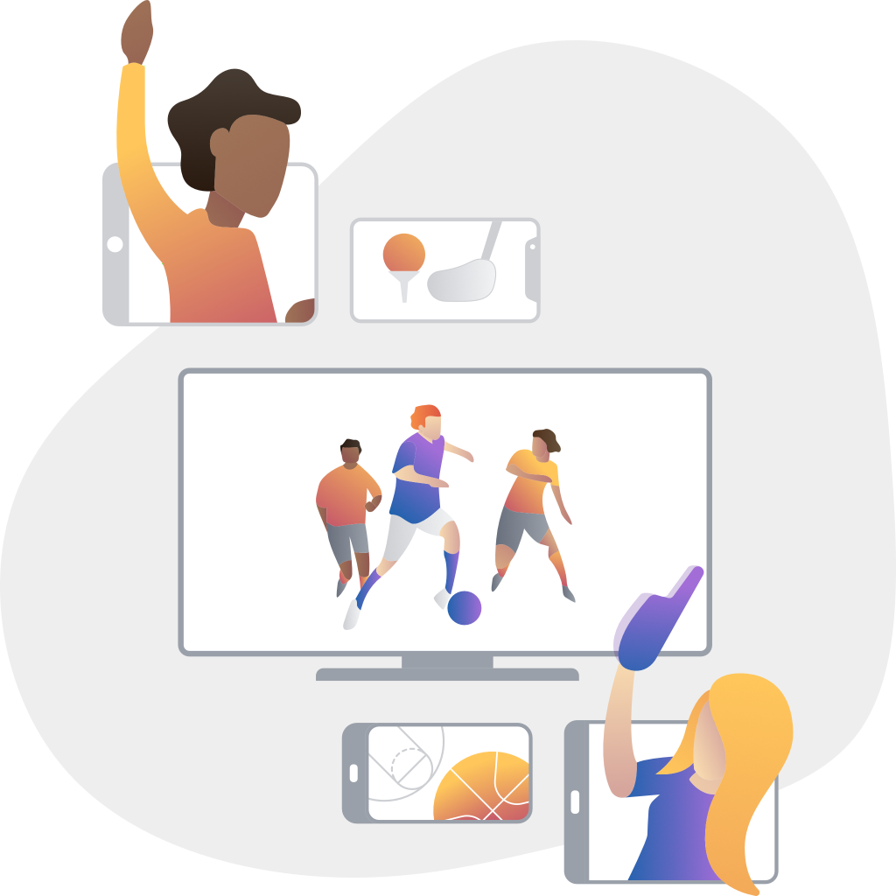
End-users navigate and consume content published by the operator.
As a user I want to:
We utilised a process based on the double diamond framework, adapted to fit our product team’s pipeline. Involving relevant parties throughout each phase in our projects and features.
The lead designer conducted a customisation analysis on AXIS. This involved investigating:
As hero banners are often the first content presented to end-users, they were also the most frequently customised.
Combining the data from the customisation analysis, we’ve found that 4 of 6 clients customised or explored customising our “out of the box” range of hero banners to match some of the current industry standards.
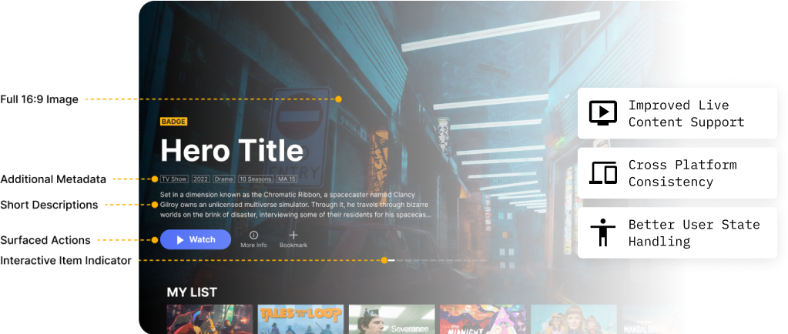
In the early stages and throughout the process I aim to gather insights into areas that may pose either a technical challenge during development, or that will require some more thorough exploration in design. Highlighting areas that may require discussions to take place early to understand the scope better. Here are some notable areas of complexity faced in this feature:
After conducting complexity analysis and organising various catch-ups with developers to discuss feasibility, it was deemed that video backgrounds would be the largest and most difficult to estimate. The developers still needed to perform a spike into how they’d implement it. Based on our research done earlier, we made the decision to focus on the frequent client customisation requests as our MVP solution, and handling the video background as part of the second phase.
The early phases involve whiteboard and sticky note sessions. Brainstorming with the design team around what the hero carousel will feature, as well as any considerations we can see that will require further exploration, either through user flows, prototypes or during visual design.
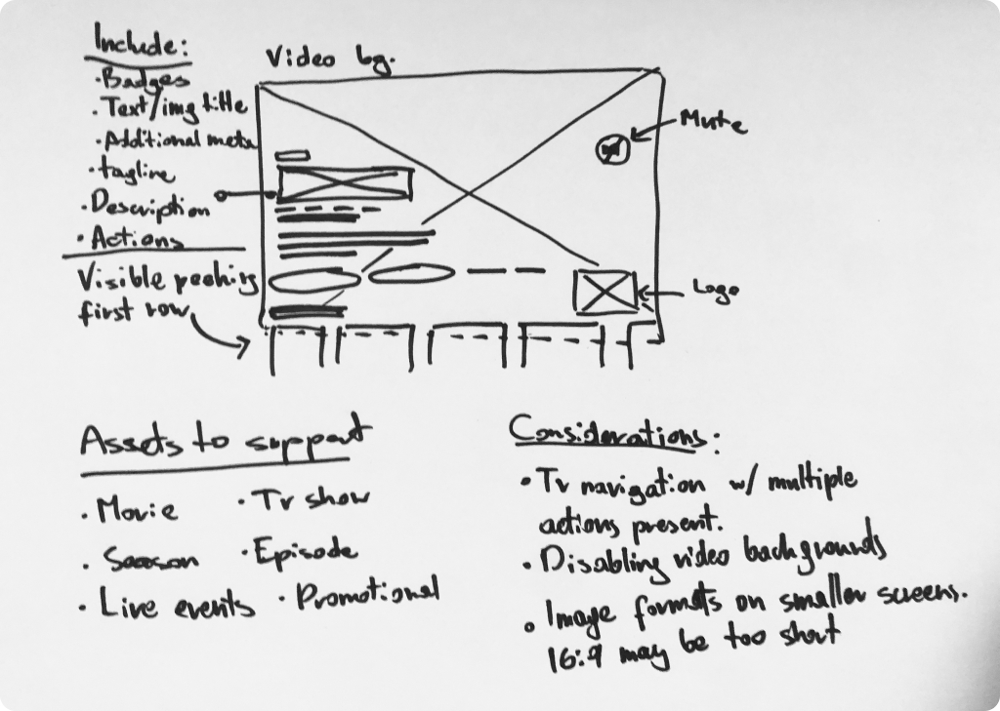
In the case of this new hero carousel, we were familiar with components on AXIS and had enough market research to base a lot of decisions on. In the case of a more complex feature with more unknowns, we could facilitate kick-off workshops with relevant parties. Using several frameworks to facilitate the creation of ideas for new features:
Responsive Web App provides insight into how much extra exploration smaller screens may require with the additional elements. Solving a lot of these problems early on will allow us to translate most of the decisions over to native mobile platforms.
Native & TV platforms most of the rules and behaviours will carry over for consistency. However, platforms like iOS, Android or TV targets will have their own documentation with any platform-specific annotations.
Layouts, Flows, States, Edge Cases and Annotations documented using the wireframing and prototyping software Axure. We can quickly begin to visualise additions to the hero carousel, allowing quick iterations due to their low fidelity nature. Wireframes and flows also serve as a great discussion point allowing the design team, developers, stakeholders and more, to quickly see the direction. It's also worth thinking through high-level rules and behaviour at this stage, though it's a fine balance of not adding too much detail too early. Ensuring time is well spent in case any aspect doesn't make the final design or build.
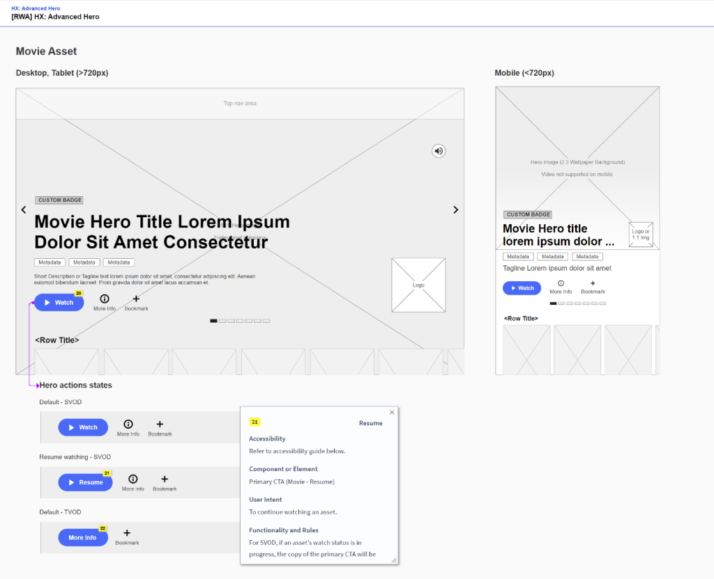
After a series of internal reviews and discussions that helped iterate the layout, I begin to explore other requirements and goals for the feature. So far we've created the general layout based on our existing hero offerings and in reference to market research. We've also added new components to the hero such as buttons, short descriptions, metadata and more. We can now begin to explore how those components will be affected by our other requirements such as:
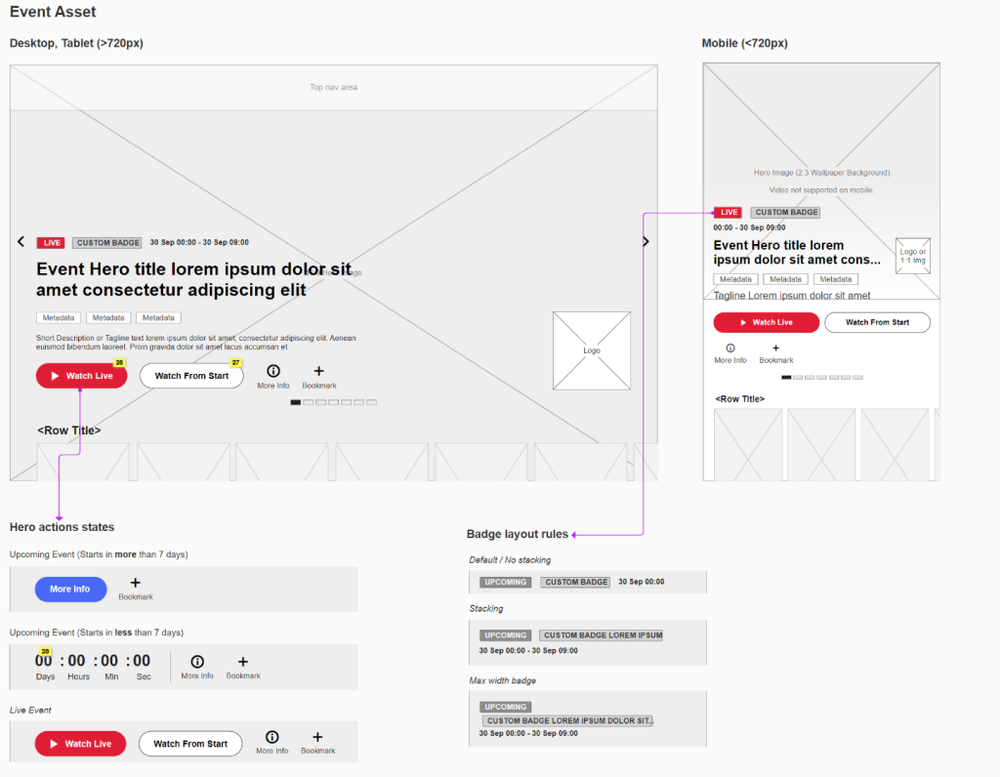
Above you can see an example of a wireframe created to explore and showcase:
Under the hood of AXIS is Presentation Manager. A web interface allowing operators to control their content, users, its components and more. Each component, like our hero carousel, has a range of properties allowing the operator to change aspects such as content alignment, visibility of elements like the tagline or badge and more. The new hero carousel introduced a number of additional properties to ensure the user would have an adequate level of control, without the need for developer support. As we explored each part of the carousel, we also created a document detailing properties for each component of the hero, as well as expected values, copy and tooltips:
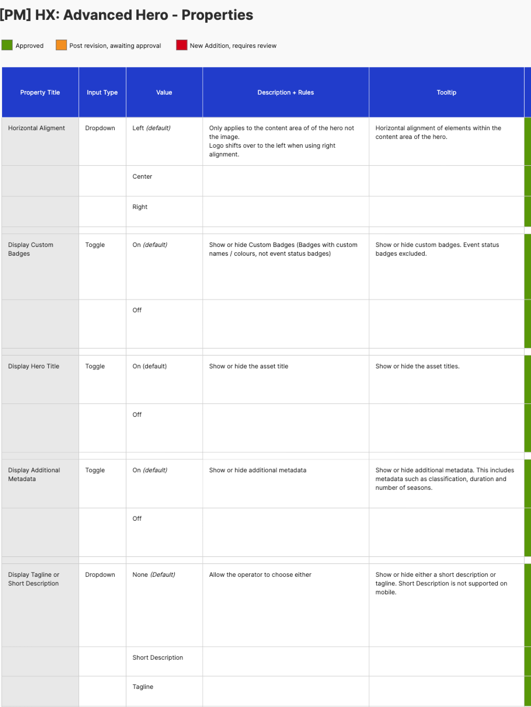
We needed to be strategic about how we'd create specifications for accessibility; across varying devices and operating systems. Starting off by performing an in-depth analysis of existing accessibility implementation on AXIS. We discovered a number of inconsistencies between similar templates such as sport detail pages vs movie detail pages.
Ensuring all apps followed rules and guidelines, I proceeded to research platform-specific accessibility standards covering:
Conducting and documenting research on the extent of accessibility implementation present on video services in the market. While it helped define the scope and expectation, it also indicated that most big services on the internet cover a minimum requirement of accessibility implementation.
Annotating navigation order, interactions and specific narrations, alongside any UX documentation provided to developers.
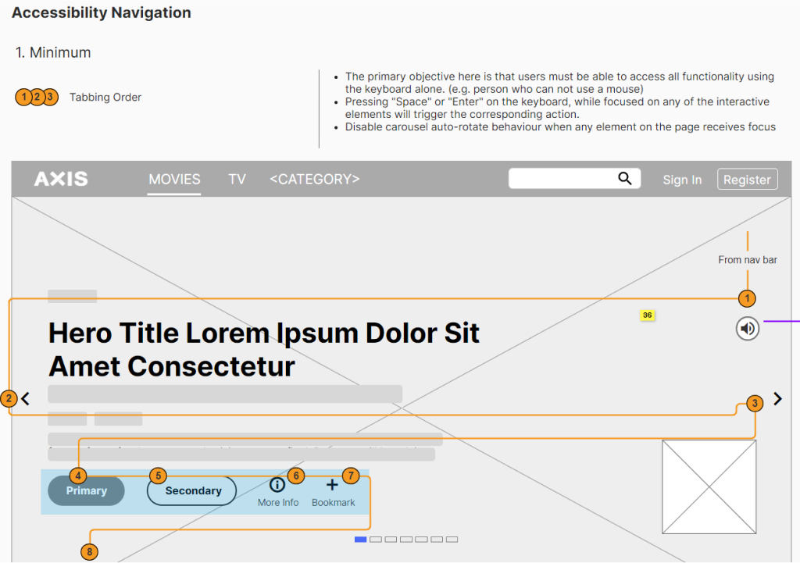
Making sure the implementation is adhering to designs and guidelines, I review the implementation with Quality Assurance teams. Documenting inconsistencies or need for improvements.
Unfortunately due to time and resource constraints we were unable to perform usability testing to further validate the feature.
My visual design approach begins with an exploration of areas that I’ve identified as potentially problematic or will simply require further exploration to ensure clear rules and good decisions. Identifying and exploring these early ensures that we focus on solving possible issues early on before creating detailed specs that may need to be altered otherwise.
I aim to utilise existing components and styles as much as possible to reduce development time and retain styling consistency. Reducing having one-off styles or components.
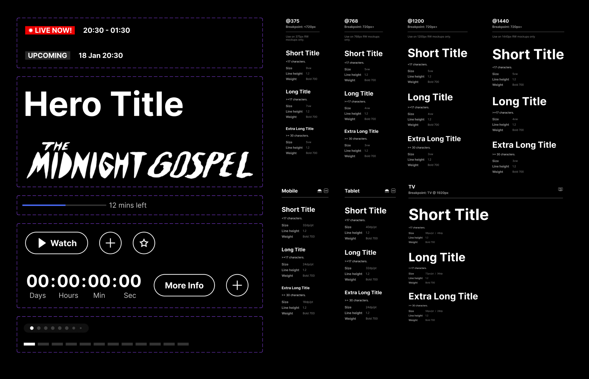
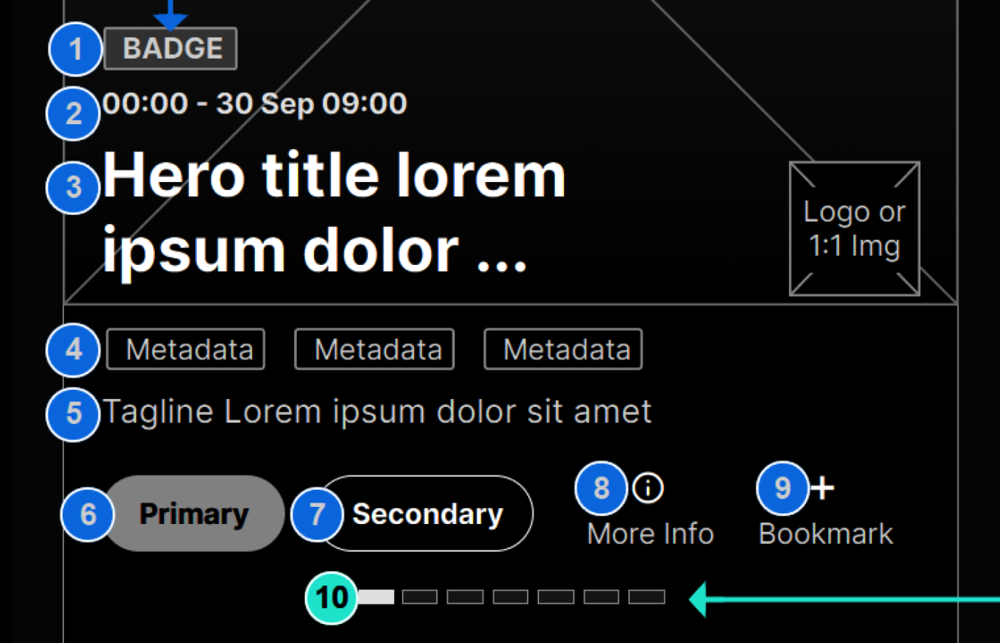
Mobile format reduces our horizontal real estate. The common 16:9 image format used on larger devices wouldn’t be impactful on mobile devices.
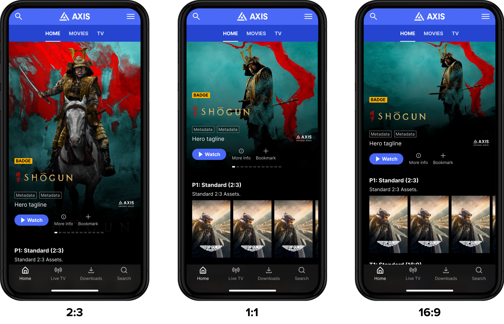
With the browser set to full screen width, the 16:9 background image can take up all available height. Exploring so that image and video background are not obstructed with the new metadata, actions and more. Ensuring optimal discoverability of the content below.
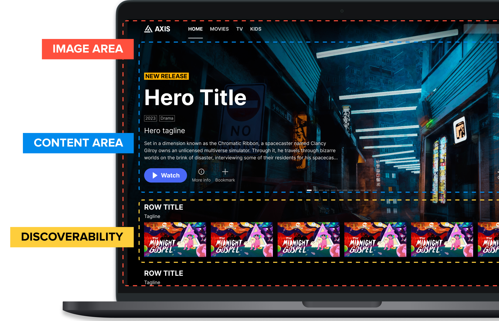
When mixed content is present, such as a mixture of both movies and TV shows, the content area will vary in height. Sport content often has longer titles than most movies and TV shows. Exploring varying content pinning rules through quick prototypes to determine the least visually disruptive experience.
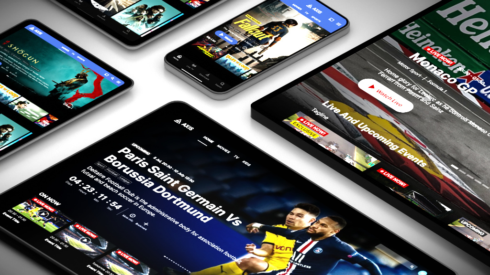
Since our development team was working from Mumbai, in a different timezone, it was crucial to provide them with clear spec sheets outlining all expected rules.
Beyond development, this also serves as a reference point for design reviews and quality assurance.
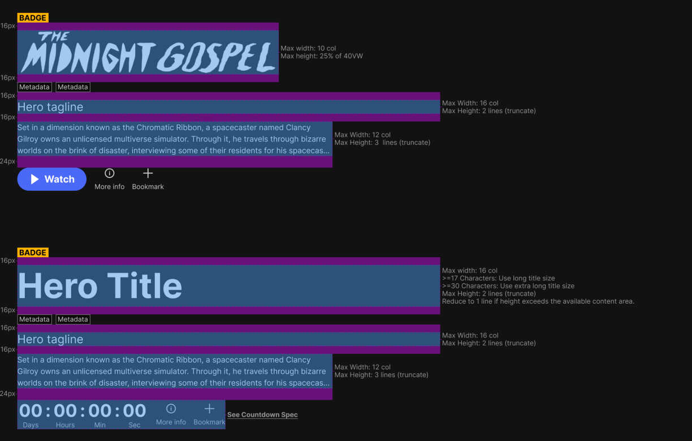
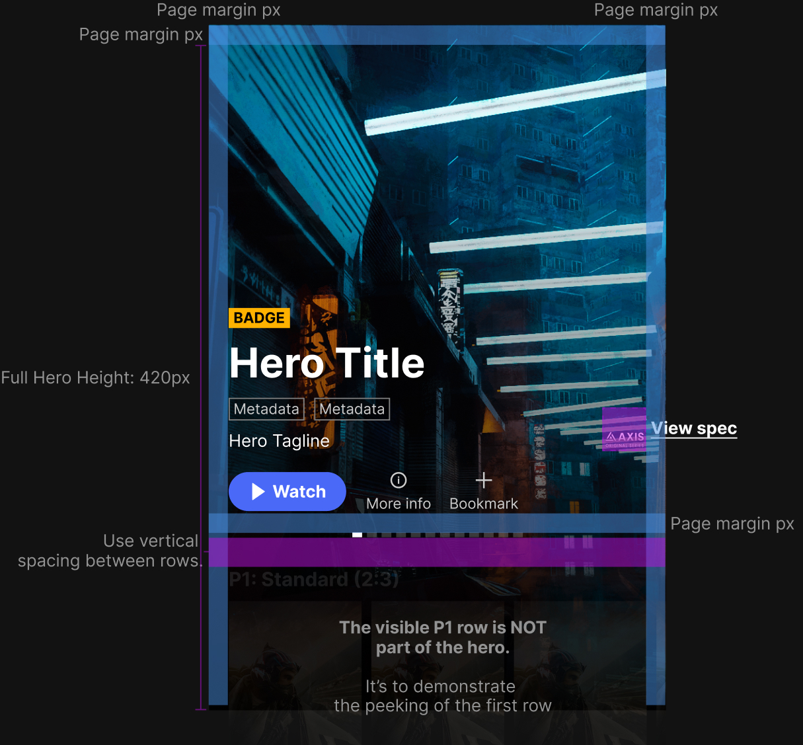
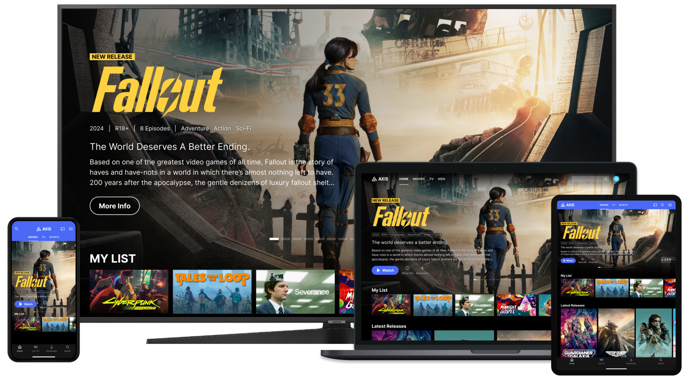
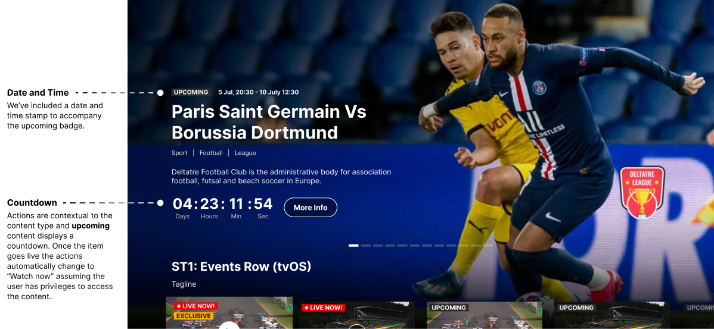
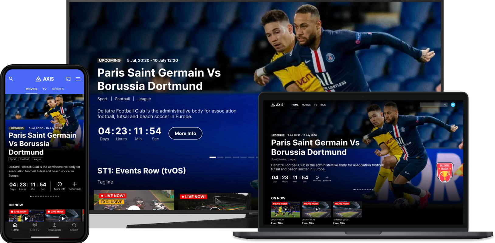
Throughout the creation of the AXIS design system, we utilised Figma’s component properties to reflect the control AXIS provides to operators per component. It was no different with the hero carousel, as it would be added to the design system and utilised by service designers.
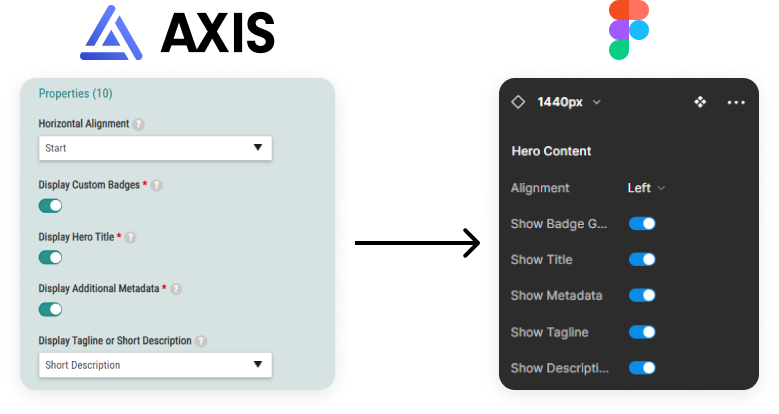
Besides feature-based projects like this one, we’ve been hard at work producing a design system for AXIS. Bringing consistency between our front end apps and our design documentation, the design system served as an invaluable starting point for producing the visual designs of the new hero. Check out the Design System case study if you’d like to know more about the design system work.
Throughout some rapid development cycles, challenges emerged regarding the synchronisation between design documentation and what was implemented. Time constraints often hindered designers from reflecting changes between the design documentation and the final product. This discrepancy gradually led to knowledge inconsistencies, creating ambiguity regarding the product's out-of-the-box offerings, posing challenges for both sales teams and service designers.
The design documentation became misaligned over time with the front-end apps.
Created confusion for sales and solutions on what is available out of the box.
Contained functional and visual inconsistencies between platforms.
Utilising Figma’s robust set of functionality such as properties and variants, allows service design and solution teams to quickly apply a client’s branding. Allowing them to produce mock-ups for various scenarios effortlessly.
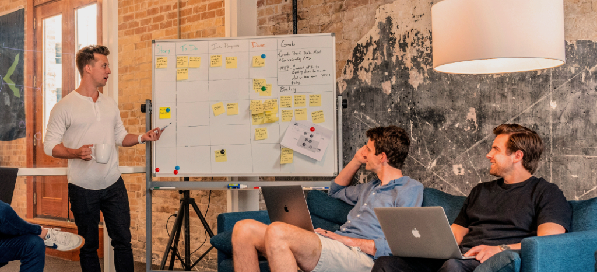
The Design System will be utilised as a framework for creating any new features. Ensuring consistency and saving time by allowing designers to quickly create and re-use components. Providing more time to create solutions than recreating and verifying existing functionality and components.
Developers will use the design system as a reference point for the AXIS code re-write. Translating over the established token system to allow a smoother design to development transition. The design system will also contain spec sheets where needed to help guide developers, QA and project managers in the finer details of each component and template.
Reduce time for developers to reskin apps for clients.
Reduce time for designers to produce mock-ups for clients.
Reduce confusion about what changes are possible without further “customisation” of the apps.
Improve consistency of the apps without introducing too much dev work.
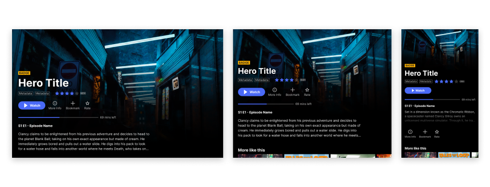
In the early stages of planning the design system, we decided our focus should begin with the responsive web app. The platform covers a range of breakpoints, including desktop, mobile and tablet sizes. Most of those components would translate over to native iOS and Android platforms. Followed by completing TV designs. This approach would also allow us to work out the structure of components built within Figma on the most complex platform first.
Utilising Figma’s robust component functionality, it was important to determine a balance of flexibility, but also ensure the components don’t become so complex that they’re difficult to understand or update.
Utilising Confluence and Jira, every page template had a detailed outline of all expected adjustments as well as their original values. This provided support for developers during the code re-write, product owners and managers in writing accurate tickets and QA with a reference for testing.
Providing early previews to the wider design teams within the company was a fundamental part in shaping the design system. Gathering their feedback and building a mutual understanding was a fundamental step in ensuring we spent our time wisely.
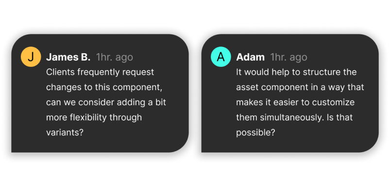
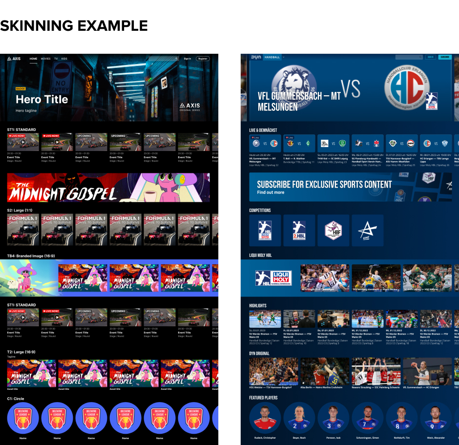
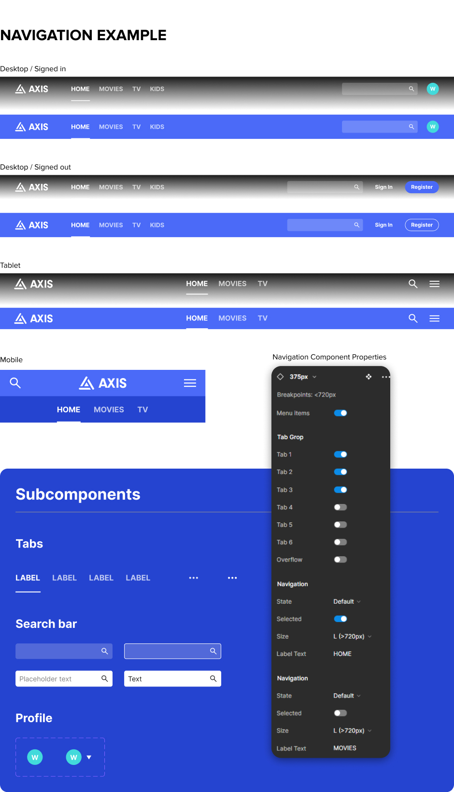
MTRIBES allows non-developers to identify how users are engaging with UX in real-time, group customers into dynamic tribes based on behaviour, interest and demographic, create and publish personalised campaigns, and measure the results all without a line of code. The user can schedule to show, hide or display variants of their components within their apps using time, date and time zone parameters.
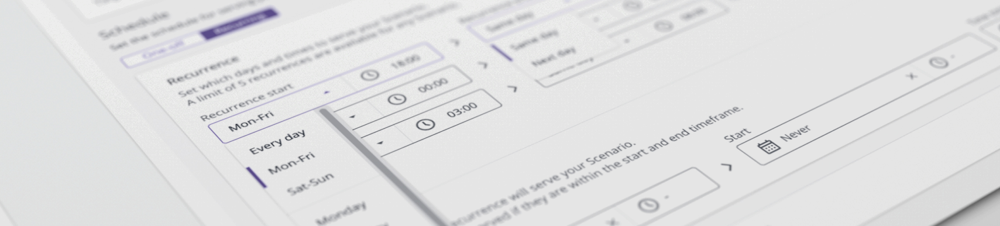
MTRIBES only allowed its users to have a single schedule per experience. This complicates things for users when attempting to publish content with complex recurring schedules, forcing them to duplicate the content to create more granular schedules.
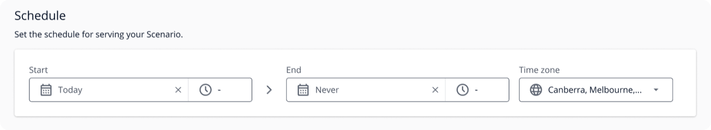
Utilising Productboard, our clients were able to vote and comment on roadmap features. Allowing us to gauge the priority. The feedback also included a lot of valuable use cases that served as a foundation of our requirements.
During the initial build of MTRIBES, the scheduling functionality was created as an MVP solution, only allowing single schedules. This resulted in clients duplicating experiences in order to achieve flexibility. Complicating the workflow for publishers using MTRIBES.
Enable users to schedule content publication in advance, reducing the need for manual intervention.
Offer flexible scheduling options to accommodate diverse publishing needs.
Ensure the system is robust and dependable, accurately publishing content according to the specified schedule.
Enhance user satisfaction by simplifying the content management process and empowering users with greater control.
We utilised a process based on the double diamond framework, adapted to fit our product team’s pipeline. Involving relevant parties throughout each phase in our projects and features.
We gathered user feedback using Productboard. Allowing our clients to either vote on roadmap features or suggest ones based on their use cases and pain points. There was a high frequency of requests to expand our scheduling functionality by adding the ability to create recurring schedules.
We based our use-cases on client comments from Productboard. This allowed us to focus on creating a feature that solved customer pain points rather than simply adding a recurring schedule mechanism without grasping the bigger picture.
The key audience for this feature would be content publishers using MTRIBES.
Research of various competitors and products using recurring schedule implementation was useful to reference different mechanisms. However, each competitor’s or software’s recurring schedule functionality was built around a specific context. None of which provided examples of solving similar use-cases to ours.
The design team got together early to workshop the direction of the feature, breaking down use-cases from our clients’ feedback to creating some high level sketches on the whiteboard.
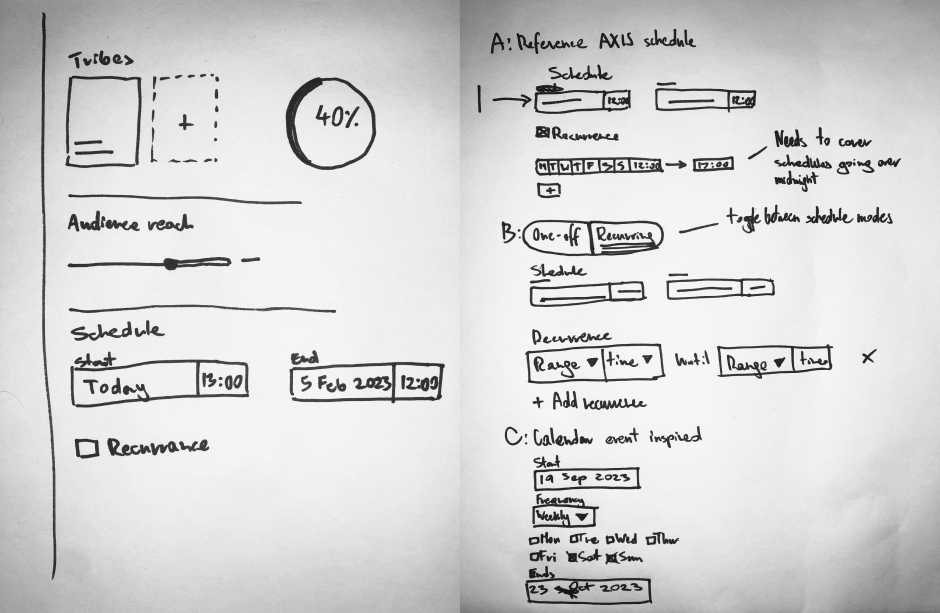
One of our early options referenced our in-house presentation manager used on our product AXIS. Presentation manager serves as the web interface used to manage content on AXIS. It also features a recurring schedule mechanism our customers were familiar with, so it served as a good baseline of what our customers would expect.
After generating ideas and deciding on a few options to explore, I begin to create wireframes based on everything gathered and explored so far.
Below is an example of my wireframes covering key screens and states, accompanied by annotations outlining rules and behaviour.
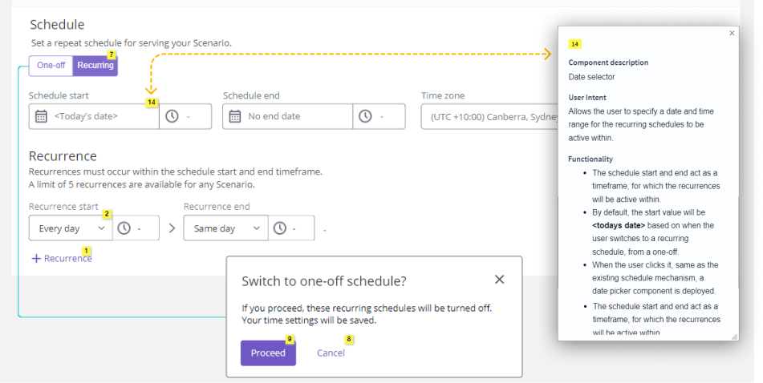
Exploring nuances of having multiple recurrences as well as thinking through implications of removing them for an active experience.
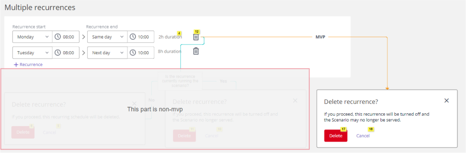
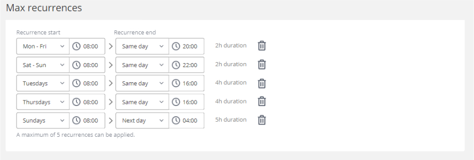
Working through various mechanisms that satisfy our user needs. While utilising clear language and UI elements to ensure a reliable user experience.
Exploring and documenting validation and errors the user may encounter.
Currently living inside of the targeting section tab, the addition of extra components within the scheduling section would extend the panel’s height. We considered moving the scheduling mechanism to its own tab.
Our scheduling mechanism needed to account for a few use cases where a schedule runs over midnight. In order to create a simple to use and clear UI the scheduler could trust, we needed to ensure we picked the right mechanism and language to accompany it.
One of our key requirements is allowing the operator to have multiple recurrences. Allowing cases such as showing content every Wednesday, as well as on the weekends. To ensure the operator doesn’t resort to duplicating their content to create another recurrence, we’ll need to create a unique mechanism that allows multiple recurrences while being easy to use.
In order to reduce the number of one-off components across the app, we utilise existing components as much as possible. This introduces a slight complexity as the fields used for a single schedule, become the schedule time-frame when recurring schedule is enabled.
I'm a big believer in making sure not to work siloed from the rest of the team. Here is a brief summary of collaborations that have taken place during this feature, and across most others I've worked on.
Design process documents, internally referred to as DPDs, serve as a point of reference of the decisions made to complete a feature. Future teams can use it to gather insights into decisions made, removing ambiguity about why certain things were built the way they are. Giving further insights into any technical challenges, constraints, research and usability testing results that shaped the decisions and solutions.
There's only so much data to be gathered from competitor research. To back more complex decisions, usability testing is a great way to get insights into how functional our intended solution really is. However, despite the importance, not every project and feature will allow resources for testing.
Usability testing is a large topic, this section is a brief summary of my approach. I often reference Nielsen Norman Group articles and studies to gain further insights for best practices: Usability Testing 101 and Why You Only Need to Test with 5 Users.
Usability testing can be a resource heavy task, we took the opportunity to combine the testing with 2 other ongoing features. Since all of the work took place on the same page as scheduling, it made sense for us to write the testing protocol so it lets us validate 2 other features in one go.
Unfortunately I no longer have access to the final script we ran our testers through, however here’s a baseline we drafted prior:
After synthesising the results using affinity mapping we gathered the following results:
Despite most of our participants successfully completing the recurring schedule, we saw room for improvement in the following areas:
To address some of the concerns spotted in testing and reduce user error. We went ahead with re-arrangement of the section. Improving hierarchy by placing the recurrence fields first followed by setting of the timeframe the schedule will run for. This change brings the recurrence fields to focus first, where previously the user may have filled out the timeframe first and potentially ignored the recurrence fields resulting in an error. This would also create a visual distinction between the one-off and recurring schedule.
The addition of recurring schedule allowed clients to maintain a cleaner UI by reducing the need to duplicate experiences for each schedule, in turn simplifying their workflow.
A sketch-first 3D floor plan editor that runs in the browser. Drawing walls feels natural from the first click: tap out corners or type exact lengths and angles, and the plan snaps into place as you go. Then furnish the rooms and look around them in 3D.
I wanted to map out a home properly: where the walls really are, whether the sofa fits, how a second furniture arrangement would feel. The room planners I tried were quick but loose with measurements, and CAD packages were precise but slow to set up for something this personal.
So I designed the tool I wanted. Precise like a CAD sketch, where every wall can be typed to the centimetre, but quick enough to try an idea in a few minutes, and visual enough to show someone else.
The 3D view fills the screen and everything else floats over it. The work moves through three modes, each with its own colour so it's always clear where you are.
Click corners or type lengths and angles. Snapping to corners, midpoints and 45° guides. Doors, windows, power points and skirting go on the walls, and closed areas become rooms with their areas.
A catalogue of furniture, kitchens and wardrobes built piece by piece, paint and flooring, plants and art. Items slide along walls and push up against each other like the real thing.
Just the plan in 3D, lit by a sun you can move. Walls cut away as you orbit so you can see inside, or slice the whole building at a height.
.glb with everything named, grouped and in metres, ready to render.With this many tools, the risk is that each one behaves a little differently. Early on I wrote down the interaction rules: how the pointer, keys, snapping, dimensions and selection work. Every new feature had to behave like its nearest existing neighbour, and whenever I corrected something in testing, the correction went into those rules too.
The same thinking went into touch. On tablets and phones the tools rearrange, gestures replace the mouse, and a short tour on first launch explains how to move around.
I designed Floorplanner then built it with Claude Code. I established the direction, the interaction design and the details; Claude wrote most of the code, and I tested every change in the browser and sent back what felt wrong. It let me work like a designer with a developer at my side, in the real product instead of a prototype.
About a month from first wall to stairs, 120+ iterations, and a suite of automated tests guarding the geometry: walls, rooms, snapping and the file format.
Digital illustrations: cinematic scenes, mostly built in 3D and painted over.
The digital illustrations are created using a range of software such as Procreate, Photoshop, Affinity Photo and Blender. Almost all 3D assets used in the scenes are created by me. While I have explored various AI generative software, none of the artworks present on this page are made using tools such as Stable Diffusion, Midjourney, etc.